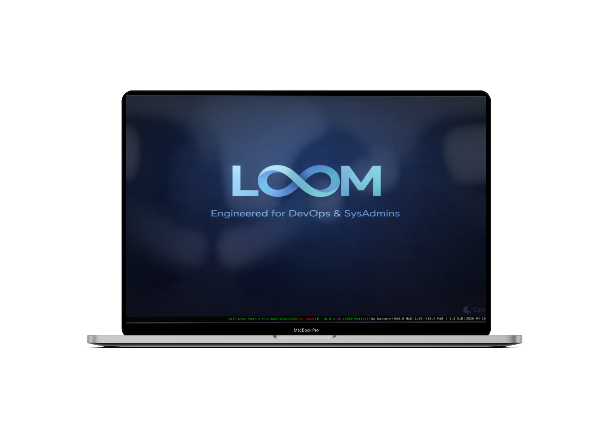
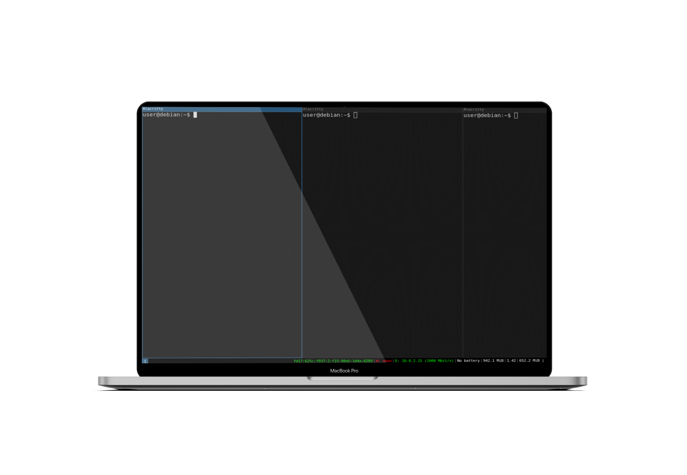
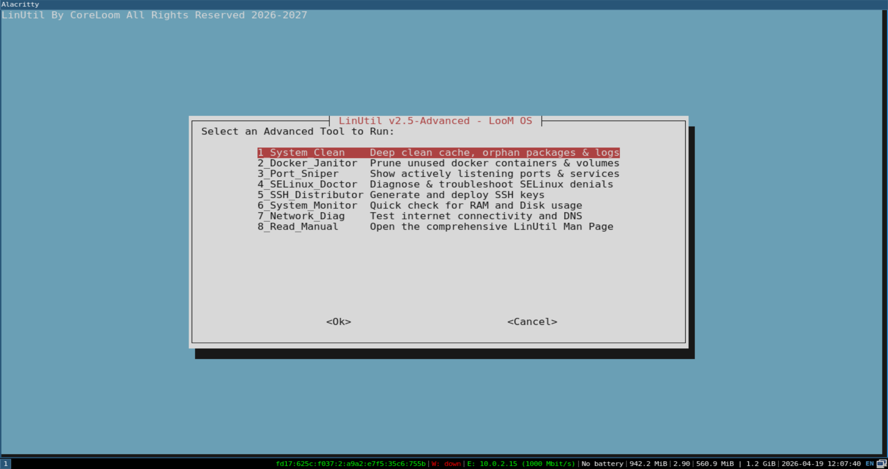

A blazingly fast, lightweight Linux distribution built on a stable Debian Core. Pre-configured with i3wm, Docker, and the exclusive LinUtil toolkit to drastically cut down your setup time.



Skip the tedious initial setup. Docker, Docker Compose, Terraform, Ansible, and Netdata are pre-installed, secured, and optimized out of the box.
A pure, keyboard-centric workflow. No heavy desktop environments. Paired with Alacritty and Zsh (autosuggestions enabled) for maximum terminal productivity.
Our exclusive enterprise CLI utility. Deep clean your system, prune Docker containers, and diagnose SELinux policies with a single, simple command.
By stripping away unnecessary GUI elements and background services, LooM OS boots faster and leaves more RAM and CPU for your containers and compilations.
LooM OS stands on the shoulders of giants. We've curated the best tools so you don't have to.
Download the ISO image and use a tool like Rufus or BalenaEtcher to flash it onto a USB drive (minimum 8GB recommended).
Boot your machine from the USB. You will instantly enter the Live LooM OS environment. Press Alt + Enter to open your terminal.
Ready to commit? In the terminal, simply run sudo debian-installer-launcher and follow the standard Debian graphical installer to write it to your disk.
Join the next generation of System Administrators and Cloud Engineers who demand efficiency over bloated desktop environments.